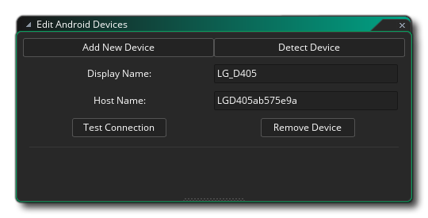
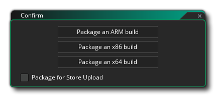

Compilar su juego puede significar una de dos cosas: compilarlo para probarlo o compilarlo para crear un paquete de activos para una plataforma de destino específica. La prueba de tu juego se puede hacer simplemente presionando el botón Reproducir  en la parte superior del IDE, que lanzará el juego para probar usando el objetivo especificado. También puede ejecutar el juego en Modo de depuración probando con el botón Depurar
en la parte superior del IDE, que lanzará el juego para probar usando el objetivo especificado. También puede ejecutar el juego en Modo de depuración probando con el botón Depurar  . Esto ejecutará el juego, pero también abrirá la ventana de depuración, donde puede monitorear cómo se desempeña su juego y depurar cualquier problema (consulte la sección sobre depuración para obtener más información).
. Esto ejecutará el juego, pero también abrirá la ventana de depuración, donde puede monitorear cómo se desempeña su juego y depurar cualquier problema (consulte la sección sobre depuración para obtener más información).
De forma predeterminada, GameMaker Studio 2 se ejecutará y depurará utilizando la máquina virtual incorporada (máquina virtual), que es más o menos lo mismo que ejecutar en el sistema operativo de escritorio que se utiliza. Sin embargo, GameMaker Studio 2 es un motor multiplataforma y puede probar, depurar y compilar paquetes de activos de sus proyectos en diferentes plataformas de destino (las plataformas exactas disponibles dependerán de los detalles de su licencia). Para cambiar la plataforma de destino actual, puede hacer clic en el botón Objetivos  para abrir la ventana de Objetivos, que se verá algo así (los detalles exactos variarán de acuerdo con su tipo de licencia):
para abrir la ventana de Objetivos, que se verá algo así (los detalles exactos variarán de acuerdo con su tipo de licencia): 
En la parte superior, junto al botón Targets, tiene la configuración actual que le indica la plataforma y la configuración específica que se está usando, y luego se ocupa el resto de la ventana con los detalles y opciones de todos los objetivos disponibles que puede seleccionar para usar en su lugar. Cada sección de esta ventana se explica a continuación:
La primera columna del Administrador de objetivos está dedicada a los Trabajadores remotos que tiene disponibles. Para empezar, solo tendrá aquí una máquina "Local", que es la máquina en la que GameMaker Studio 2 está instalado, pero también puede configurar un Remote Worker para su uso. Cuando se haya configurado un Trabajador Remoto, podrá seleccionarlo de la lista aquí y hacer que construya sus proyectos en lugar de usar el equipo host donde está instalado GameMaker Studio 2.
Para obtener más información sobre cómo configurar y usar Remote Workers, consulte la siguiente sección:
Esta sección enumera todas las plataformas de destino disponibles. El contenido de esta lista variará según la licencia que tenga, pero siempre tendrá al menos el objetivo de "Prueba". Para seleccionar un objetivo, simplemente haga clic
en eso. Esto actualizará el resto de las ventanas de opciones para mostrar diferentes detalles según la plataforma seleccionada.
Cada plataforma de destino puede tener uno o más formatos de salida, los principales son:
- VM: el objetivo VM (máquina virtual) usa un corredor genérico para cada plataforma y luego interpreta el código para su juego. En general, esta opción se usa para las pruebas debido a sus tiempos de compilación más rápidos, pero no ofrece el mismo aumento de rendimiento que ofrece la opción YYC (si está disponible). Sin embargo, puede usar esto para compilar juegos más pequeños o juegos donde el rendimiento nunca va a ser un problema.
- YYC: El YYC (Compilador YoYo ) toma la salida normal de GameMaker Studio 2 y la compila en código nativo para la plataforma de destino, "eliminando" las funciones innecesarias y realizando una serie de otras técnicas de optimización para crear un ejecutable mejorado y más pequeño. Esto puede aumentar el rendimiento de tu juego al menos dos o tres veces, especialmente en juegos de lógica pesada, ideal para aquellos juegos más grandes o intensivos en CPU. Los tiempos de compilación pueden llevar más tiempo y siempre debe borrar el caché del compilador antes de compilar cualquier paquete final de activos completo para una plataforma de destino. Tenga en cuenta que el objetivo de YYC puede requerir la instalación de herramientas adicionales para la plataforma seleccionada; de lo contrario, no funcionará; puede encontrar más información al respecto desde el Centro de ayuda de YoYo Games, así como en las páginas de Preferencias de objetivos individuales detalladas en este manual.
- JavaScript: el objetivo de JavaScript solo estará disponible para unos pocos objetivos, como el destino HTML5, y establece que el juego se compile en JavaScript puro.
Ciertas plataformas (como iOS o Android ) le permiten asociar uno o más dispositivos con GameMaker Studio 2 para que los juegos puedan recopilarlos selectivamente. Inicialmente, la lista de dispositivos estará vacía y debe hacer clic
para abrir el Editor de dispositivos:
Aquí puedes agregar nuevos dispositivos y probar GameMaker Studio 2 para conectarte a cualquier dispositivo que esté conectado. El contenido exacto de esta ventana dependerá de los detalles de la plataforma (consulte la sección en el Administrador de dispositivos para obtener detalles exactos de cualquier plataforma dada). Una vez que se ha encontrado o agregado un dispositivo, se mostrará en esta ventana, como en esta imagen de ejemplo para Android: 
El procedimiento y los requisitos exactos para configurar dispositivos y resolver problemas se pueden encontrar en la sección correspondiente de la Base de conocimiento de GameMaker Studio 2.
Como se explicó en la sección de Configuraciones, puede almacenar ciertos detalles para compilar su juego como Configuraciones. Esta sección de la ventana de Objetivos le permite a GameMaker Studio 2 seleccionar automáticamente una configuración específica para una plataforma de destino específica.

Crear un paquete ejecutable final
Compilar su proyecto de juego a cualquier plataforma de destino requerirá que haya configurado las herramientas de compilación correctas (consulte aquí ) y que también haya completado las Preferencias de plataforma adecuadas. Una vez que haya hecho eso, puede simplemente hacer clic en el botón Crear ejecutable  en el IDE para iniciar la compilación del compilador o seleccione Crear ejecutable en el menú Generar. Cualquiera de las opciones abrirá una ventana de explorador de archivos donde puede dar el nombre final que desea usar para su paquete de juego antes de hacer clic en Guardar para comenzar el proceso de compilación y compilación. Una vez que haya hecho esto, se generarán los archivos necesarios para que pueda distribuirlo como desee.
en el IDE para iniciar la compilación del compilador o seleccione Crear ejecutable en el menú Generar. Cualquiera de las opciones abrirá una ventana de explorador de archivos donde puede dar el nombre final que desea usar para su paquete de juego antes de hacer clic en Guardar para comenzar el proceso de compilación y compilación. Una vez que haya hecho esto, se generarán los archivos necesarios para que pueda distribuirlo como desee.
Cada opción de destino se guarda en un formato específico de plataforma, que se detalla a continuación:
- Windows: la compilación para el sistema operativo general de Windows primero le pedirá que elija entre crear un Instalador o un paquete Zip, donde el instalador será un solo ejecutable que instalará su juego, y el archivo Zip será un archivo comprimido de formato zip único con todos sus archivos de juego almacenados dentro (los archivos necesitarán ser extraídos para que el juego se ejecute).
 Si marca la casilla marcada Recordar opción de empaquetado, entonces GameMaker Studio 2 recordará la opción para todas las compilaciones futuras (esto se puede restablecer o cambiar desde las Preferencias de Windows ). Puede obtener más información en el Centro de ayuda de YoYo Games
Si marca la casilla marcada Recordar opción de empaquetado, entonces GameMaker Studio 2 recordará la opción para todas las compilaciones futuras (esto se puede restablecer o cambiar desde las Preferencias de Windows ). Puede obtener más información en el Centro de ayuda de YoYo Games - Ubuntu (Linux) - Las aplicaciones de Ubuntu (Linux) se pueden compilar como *.zip archivos. Puede obtener más información en el Centro de ayuda de YoYo Games.
- HTML5: si ha elegido construir HTML5, entonces una index.html archivo (este es el nombre predeterminado, pero también puede dar su nombre en las Preferencias de plataforma) junto con una carpeta que contiene los archivos de su juego se crearán y guardarán en la ubicación especificada. Para que tu juego funcione, necesitarás que ambos se suban a un servidor. los index.html también se puede personalizar para mostrar su juego con un color de fondo diferente, o en una posición diferente, etc., pero se necesita conocimiento de HTML, y también puede especificar su propio archivo de índice personalizado cuando construya el paquete (consulte las opciones de juego HTML5 ). Puede obtener más información en el Centro de ayuda de YoYo Games.
- Android: para dispositivos Android, un solo *.apk Se generará un archivo que se puede usar directamente en cualquier dispositivo Android o cargar en las tiendas de Google Play o Amazon (o en cualquier otro sitio que acepte aplicaciones de Android ). Puede obtener más información en el Centro de ayuda de YoYo Games.
- iOS: compilar en iOS creará xarchive archivo que luego se usa en Xtools para crear el paquete final de iOS. Tenga en cuenta que para compilar para iOS necesitará una computadora Apple Mac que ejecute OSX o superior, así como los certificados y permisos pertinentes. Puede obtener más información en el Centro de ayuda de YoYo Games.
- Mac OS: el objetivo de Mac OS generará un *.app archivo o una *.pkg archivo, dependiendo de si desea cargarlo más tarde en Mac App Store o no. Al igual que con iOS , necesitará una computadora Apple Mac que ejecute OSX o superior, así como los certificados y permisos pertinentes. Puede obtener más información en el Centro de ayuda de YoYo Games.
- Windows UWP: para Windows UWP, GameMaker Studio 2 creará *.appx paquete que luego puede cargarse en la Tienda Windows. Al hacer clic en el botón Crear ejecutable, se le pedirá que GameMaker Studio 2 a GameMaker Studio 2 qué tipo de paquete desea crear (puede ser para arquitecturas ARM, x64 o x86), y debe elegir aquello que se dirige a los dispositivos que su juego utilizará. ser apoyado en:  Si marca la casilla marcada como Paquete para la carga de la tienda, el paquete final creado será un .appxupload archivo, que es lo que Microsoft especifica debe utilizarse para enviar aplicaciones a su tienda, como se explica en este artículo aquí. También tenga en cuenta que puede establecer la opción de empaquetado predeterminada de las Preferencias de UWP ) para que GameMaker Studio 2 recuerde la opción para todas las compilaciones futuras (lo que significa que esta ventana de opciones no se mostrará). Puede obtener más información sobre cómo configurar y compilar en la plataforma UWP desde el Centro de ayuda de YoYo Games.
Una vez que haya creado su paquete de activos ejecutables, podrá entregar el archivo a otras personas o colocarlo en su sitio web para descargar o cargar estos archivos en los diferentes servicios de alojamiento para su distribución individual o incluso en tiendas en línea (como Google Play, iTunes o MS Store) para distribución general y venta minorista.
Tenga en cuenta que puede distribuir los juegos que crea con GameMaker Studio 2 de la manera que desee, incluida la venta. Por supuesto, esto supone que los sprites, las imágenes y los sonidos que usó para hacerla pueden distribuirse o venderse también y que usted tiene los derechos legales sobre todos los activos, y también asume que el juego cumple con el EULA de YoYo Games para GameMaker Studio 2. Puede encontrar el acuerdo de licencia en la carpeta de instalación de GameMaker Studio 2, típicamente " C:\Program Files\GameMaker Studio 2\Licence.txt ".